Effekter av arealbruk og arealbruksendringer på biodiversitet, økosystemtjenester og karbonlagring i Norge
Et systematisk kart og beslutningsstøtteverktøy
Erlend B. Nilsen , Trond Simensen , Frode Singsås , Lasse F. Eriksen , Håkon Stokland , Thomas E. Sutcliffe , Anders Kolstad , Francesca Pilotto , Matthew Grainger
Siteres som:
Nilsen, E.B., Simensen, T. Singsaas, F.T., Eriksen, L.F., Stokland, H., Sutcliffe, T.E., Kolstad, A., Pilotto, F., & Grainger, M. 2024. Effekter av arealbruk og arealbruksendringer på biodiversitet, økosystemtjenester og karbonlagring i Norge. Et systematisk kart og beslutningsstøtteverktøy. NINA Rapport 2472. Norsk institutt for naturforskning NINA Rapport 2472. Norsk institutt for naturforskning.
Kvalitetsgranskere: xx
Ansvarlig signatur: Forskningssjef [fylles ut av forskningssjefen] (sign.)
Sammendrag
Tekst inn her, et kort resymé av innholdet. Teksten i sammendraget er søkbar i databaser og på nett, og er viktig for at rapporten skal fanges opp ved søk.
Seksjoner og tomme rader mellom dem er litt tricky å få til i YAML-avsnittet, men det kan gjøres slik. Tomme rader i forordet kan også lages på samme måte.
Abstract
Tekst inn her, et kort resymé av innholdet. Teksten i sammendraget er søkbar i databaser og på nett, og er viktig for at rapporten skal fanges opp ved søk.
1 Innledning
Endringer i menneskelig arealbruk vurderes vurderes som den viktigste årsaken til tilbakegang og tap av arter og naturtyper både globalt og i Norge (Díaz et al. (2019); Malhi et al. (2020); Artsdatabanken (2021)). Arealendringer påvirker økosystemenes sammensetning, struktur og funksjon, og påvirker dermed økosystemenes evne til å produsere ulike goder og tjenester vi mennesker får fra naturen – ofte omtalt som naturgoder eller økosystemtjenester (IPBES (2019)). Det kanskje mest omtalte naturgodet i senere år er klimaregulering, der opptak og lagring av karbon i økosystemene er sentrale faktorer. Menneskelig bruk av arealene er dermed en nøkkelfaktor både i arbeidet med å bremse klimaendringene, tilpasning til et endret klima og som som den viktigste enkeltfaktoren i arbeidet med å stanse tap av natur og biologisk mangfold (Díaz et al. (2019)). Kunnskap om effektene av ulike former for arealbruk og arealendringer på naturmangfold og naturgoder, er dermed sentralt for både for arealpolitikk, klima- og miljøpolitikk.
Å kvantifisere, forstå og formidle dynamikken i arealendringer og effektene av endringene for naturmangfoldet, er dermed en grunnleggende forutsetning for kunnskapbasert arealplanlegging og -forvaltning. Imidlertid mangler aktørene i arealforvaltningen i dag oppdaterte norske kunnskapssynteser om de direkte og indirekte sammenhengene mellom arealbruk, klimaendringer og naturmangfold, der den samlede vekten av evidens fra forskningen er vurdert, og der usikkerheten omkring kunnskapen er synliggjort. Dette gjelder både grunnleggende usikkerhet om årsak-virkningsmekanismer om effekter av arealbruk på naturmangfold og usikkerhet om det empiriske datagrunnlaget for slike vurderinger (Jaureguiberry et al. (2022)). I samfunnsdebatten om arealbruk og natur vises det derfor ofte til internasjonale globale kunnskapssynteser, til tross for betydelig usikkerhet rundt hvorvidt kunnskapen fra slike globale kunnskapssynteser lar seg overføre til nasjonalt, regionalt og lokalt nivå i Norge.
1.1 Pågående areal- og landskapsendringer i Norge
Pågående areal- og landskapsendringer i Norge er et resultat av historiske prosesser, og endringer i menneskelig arealbruk som delvis skyldes globale trender og til dels et resultat av regionale endringer, lokal politikk og lokal arealbruk. Her summerer vi opp noen sentrale endringer i menneskelig arealbruk siden 1850, som bakteppe for å vurdere effekten av disse endringene på biodiversitet, økosystemtjenester og karbonlagring.
Litt i underkant av 2% av Norges areal er i 2024 utbygd med veier, infrastruktur, bebyggelse og annet sterkt endret areal. Andelen er høyere enn i verden forøvrig (1%) men lavere enn gjennomsnittet i EU (4%). Norge skiller seg fra mange andre europeiske land ved at vi har lite jordbruksareal: bare 3% dyrka mark og innmarksbeite. Byer og tettsteder var i vekst i hele forrige århundre, og bebygd areal er ifølge SSB også i dag jevnt økende. I perioden 1990-2019 ble det totalt bygget ned 1 500 km2, som tilsvarer litt under 50 km2 årlig. Utenom bebygd areal og jordbruksområder er Norges landareal i dag dominert av fjell, hei og vidde (45 prosent), skog (37 prosent), ferskvann, (6 prosent) og våtmark (5 prosent) og varig is og snø (1 prosent; SSB 2024).
Selv om andelen av landarealet i Norge som er direkte utbygd eller dyrket opp er lav (ca. 5%), er mye av landet klart påvirket av menneskelig arealbruk. Siden siste istid har så å si alt areal vært i bruk av mennesker – til jakt, fiske, beite, høsting av for, skogbruk, utvinning av naturressurser, friluftsliv og rekreasjon, og senere også til naturvern, som også er en form for arealbruk. Omfang og intensitet i den menneskelige arealbruken har imidlertid endret seg mye opp gjennom århundrene. På terskelen til den moderne tid, omkring 1850, var naturressursene utnyttet helt til grensa for hva landområdene kunne tåle, og produksjonen var maksimert med datidens teknologi. Store arealer ble påvirket av menneskelig arealbruk, men med moderat intensitet etter dagens målestokk. Ifølge (Edvardsen 2024) kjennetegnes perioden etter 1850 ved en polarisering av den menneskelige arealbruken, med mer intensiv bruk av de best egnede arealene til jord- og skogbruk, mens andre arealer i utmarka gradvis ble tatt ut av bruk eller tas i bruk til nye formål. Vi høster mer fra naturressursene enn før, takket være avl, teknologi, og vitenskap og innovasjon, men det foregår på en mindre del av landarealet (intensivering). Opphør av ekstensiv hevd og skjøtsel av tradisjonelle utmarksarealer fører til endringer i kulturlandskap, som beite- og slåtteenger, lyng- og fjellheier.
Gjennom mange år har jordbruksareal er blitt bygd ned til fordel for boliger, veier, industri og andre formål, men omfattende nydyrking har kompensert for tapt jordbruksareal slik at det samlede jordbruksarealet har holdt seg nokså stabilt siden 1920-tallet (SSB 2021). Omfattende strukturendringer i jordbruket har gitt en nedgang på 45 prosent i antall gårdsbruk, fra 70 740 i 1999 til 38 633 i 2020, og omfattende endringer i både arealbruk og driftsmåter, har ført til at jordbrukslandskapet har blitt mer homogent, der tidligere mosaikkformete kulturlandskap er endret til mer sammenhengende driftsarealer.
Det samlede arealet med fjell, hei og vidde er i tilbakegang. Redusert beite og sanking av ved til blant annet seterbruk, kombinert med akselererende klimaendringer, gjør at tre- og skoggrensene generelt stiger langsomt i Norge. Norges høyeste registrerte tregrense ligger nå 1404 meter over havet, snaut 208 meter høyere enn høyeste måling i 1918 (Jotunheimen). Arealer med varig snø og is (breer, m.m.) er i tilbakegang på grunn av varmere klima, og er nå på sitt minste etter at målinger av breer begynte tidlig på 1900-tallet (Artsdatabanken 2018, 2021).
Vi har både avskoging og «påskoging» i Norge, men det samlede arealet med skog vært relativt stabilt siden 1990-tallet. Samlet biomasse i skogene har fram til helt nylig økt, og det samlede skogvolumet er mer enn doblet de siste hundre årene, men tilveksten har flatet ut de siste årene (SSB 2021). De virkelig gamle naturskogene har vi stadig færre igjen av. Overgangen til bestandsskogbruk etter andre verdenskrig har, med større hogstflater og skogplanting i produktiv skog, har i stor grad endret skogøkosystemenes struktur. Antall kilometer nye skogsbilveier økte raskt fra 1950-tallet og fram til årtusenskiftet og øker nå svakere, med ca. 150 km pr år (Landbruksdirektoratet 2021).
Områder med myr og annen våtmark (dvs. myr, kilde, sumpskog og seminaturlig våteng) utgjør mellom fem og tolv prosent av landarealet i Norge. De siste 50 årene har vi hatt en betydelig reduksjon av arealer med tidligere myr og andre typer våtmark (ca. 7 000 km²) som er tapt eller forringet gjennom nedbygging, grøfting eller oppdyrking.
Omkring en tredjedel av vannarealet i Norge er påvirket av vannkraftutbygging, tilsvarende i underkant av 6 000 km². Et areal på om lag 1 000 km² er neddemt, og 15 av Norges 20 høyeste fossefall er regulert. Rundt 64 prosent av Norges samlede vannkraftpotensial er i dag bygget ut, mens 23 prosent er vernet.
De første naturfredningene av enkeltlokaliteter i Norge ble vedtatt i 1905 og Norges første Nasjonalpark, Rondane, ble opprettet i 1962. Den den største veksten i vernet areal og antall verneområder skjedde på 1980- og 2000-tallet. I dag er 17,5 prosent av landområdene i Norge vernet (Miljødirektoratet 2022). Dette arealet domineres av høyfjellsområder, og flere viktige naturtyper er i liten grad fanget opp. Dette gjelder spesielt skog, kyst- og sjøområder.
Vi vet fra andre land at naturlige forstyrrelser i økosystemene i form av for eksempel skogbranner, insektangrep, vindfall, flom, ras og skred øker i takt med et endret klima. Vi har generelt lite data om omfanget og frekvensen av slike forstyrrelser over tid i Norge, men regionale prognoser for Norge tilsier færre døgn med snø, økt omfang av naturlige forstyrrelser i økosystemene i form av skogbranner, insektangrep, vindfall, flom, ras og skred.
Grunnleggende kunnskap om utbygging, endringer i arealbruksintentistet og andre konkrete arealendringer er grunnlaget for i neste omgang å vurdere hvilken virkning endringene har for naturmangfold og naturgoder.
1.2 Kunnskap om effekter av arealbruk og arealendringer på naturmangfold og naturgoder
Et sentralt kunnskapsgrunnlag i arbeidet med vurderinger av påvirkningsfaktorer på naturmangfoldet i Norge er rødlister for arter og naturtyper som vurderer risiko for at arter dør ut i Norge eller at naturtyper går tapt (#artsdatabanken_norsk_2018, #artsdatabanken_norsk_2021). Rødlistevurderingene følger internasjonale metoder og utføres av eksperter med høy kompetanse på artsgruppene som vurderes (ekspertvurderinger), men vurderingene av påvirkningsfaktorer, inkludert arealbruk og arealendringer, foregår likevel på et relativt overordnet nivå, der kausale sammenhenger mellom arealendringer og effekter på utbredelse og bestandssituasjon for arter og naturtyper sjelden kvantifiseres.
Flere fagsystemer og sentrale overvåkningsprogram er etablert med sikte på å gi en samlet oversikt over tilstand og utvikling i økosystemer eller for ulike artsgrupper (f.eks. Landsskogstaksteringen, Breidenbach#; fagsystemet for økologisk tilstand , Nybø et al. (2017); Nasjonal insektovervåkning (#ref) og overvåkningsprogram for hjortevilt #ref), men slike fagsystemer og overvåkningsprogram gir ikke alltid grunnlag for å avdekke årsak-virkningforhold mellom de konkrete endringene i arealbruk og effekten på studieobjektene (arter, økosystemer og naturgoder).
Mangelen på en samlet og omfattende oversikt over forskningsbasert kunnskap om effekter av arealbruk og arealendringer på norske arter, økosystemer og naturgoder fører også til at ulike interessegrupper og sektorer stoler på ulike “fakta,” noe som ofte fører til eskalerende konfliktnivå og dårlige beslutninger. Det er derfor et klart behov både for en oppsummering av kunnskap om temaet og en systematisk kartlegging av kunnskapshull. Politikk og beslutningstaking knyttet til arealbruk og dens effekter av arealbruk på biodiversitet og klima er for øyeblikket blant de mest konfliktfylte og heftig debatterte politiske spørsmålene i Norge. Konfliktene involverer typisk dilemmaer mellom ulike samfunnsmessige bekymringer og interesser støttet av ulike sektorer og aktørgrupper (Guldbrandsen and Handberg (2022); Skogen et al. (2021)). Kontrovers om kunnskapsgrunnlaget er også ofte et sentralt apaspekt ved konfliktene, kjennetegnet ved uenighet om kunnskapens status og motstridende tolkning av kunnskapen om effektene for naturen av ulike alternativer for arealbruk (Aspøy and Stokland (2022); Rusch et al. (2022)).
IPBES (2019), 2022a, 2022b og IPCC (2018) har foreslått forvaltningsstrategier og tiltak, slik som de knyttet til transformasjonsendringer og transformasjonsstyring, for å muliggjøre oppnåelsen av FNs bærekraftsmål (#UNFCC 2015), klimaavtalens mål om å begrense global oppvarming til grensen på 1,5°C og den globale naturavtalens 2050-visjon om å stanse og reversere fortap av biodiversitet (CBD 2022). Slike tilnærminger involverer forbedret integrasjon og samhandling mellom samfunnsmessige mål, styringssektorer og flere kunnskapskilder, og er dermed svært relevante for norsk politikk og beslutningstaking knyttet til arealbruk. Imidlertid hindres implementeringutnyttelsen og tilpasningen av internasjonalt anbefalte tilnærminger og verktøy til en norsk kontekst for øyeblikket av mangelen på en omfattende forståelse av nasjonale og lokale dilemmaer og konflikter knyttet til arealbruk, samt de for tiden anvendte verktøyene og tilnærmingene. Det er derfor et presserende behov for en kunnskapssyntese som også identifiseringer av kunnskapshull knyttet til angående disse aspektene ved arealbruk og dens effekter på biodiversitet og klima.
1.3 Systematiske kart over kunnskap og kunnskapshull
Systematiske kart, også kjent som Evidenskart eller Evidenshullkart, ble utviklet for å gi en oversikt over tilgjengelig evidens om et bredt tema (Saran et al., 2020). Mens systematiske kunnskapsoversikter (systematic reviews) søker å svare på smale, veldefinerte spørsmål , er systematiske kart først og fremst egnet til å identifisere og katalogisere tilgjengelig evidens om politisk relevante spørsmål (James et al. (2016)). Systematiske kart søker å sammenstille resultatene fra kunnskapsgjennomganger på en brukervennlig måte, for eksempel ved hjelp av grafer, kart eller søkbare databaser (Miake-Lye et al., 2016). Interaktive figurer og applikasjoner og som visualiserer kartleggingen blir i økende grad brukt for å gi en dynamisk presentasjon av resultatene for brukerne (slik som EviAtlas; Haddaway et al. (2019)). Det er viktig at systematiske kart over kunnskap ikke fremstilles som et mål i seg selv. Systematiske kart forteller først og fremst hva vi har kunnskap om, mens systematiske oversikter indikerer hva vekten av evidens sier om utvalgte forskningsspørsmål. Uten ytterligere evidenssyntese må beslutningstakere være forsiktige med å treffe beslutninger basert kun på evidensens vekt alene (dvs. ved stemmeoptelling, jf. (Hedges and Olkin (1980))). Systematiske kart kan ikke erstatte stringensen ved systematiske oversikter, men kan gi beslutningstakere en oversikt over kunnskapsgrunnlaget ved å belyse hull eller klynger av evidens. De kan vise hvor evidenssyntese kan eller bør finne sted, der vi kan gå fra å å hvite hva vi har av kunnskap til å trekke slutninger om hva kunnskapen forteller oss. Hvilke forskningsspørsmål har vi tilstrekkelig med tilgjengelig evidens til å svare på gjennom en systematisk oversikt? På hvilke områder er videre primærforskning er nødvendig? Beslutningsmodeller kan supplere resultatene av en systematisk evidenssyntese for å plassere den tilgjengelige evidensen i beslutningskonteksten ((carrick_ik?) og arealbruksendringer i Norge
1.4 Formålet med kunnskapssammenstillingen
Hovedmålet med dette prosjektet er å gi en helhetlig oversikt over tilgjengelig kunnskap knyttet til effekter av arealbruk og arealbruksendringer på norsk natur, med fokus på biologisk mangfold, økosystemtjenester, klimatilpasning, karbonbinding og lagring. Kartet er begrenset i geografisk omfang til Norge, Sverige og Finland (se inklusjonskriterier nedenfor). Rapporten er dessuten ledsaget av et beslutningsstøtteverktøy som en utvidelse av det systematiske kartet for å kontekstualisere tilgjengelig kunnskap. Verktøyet er utformet som en konseptuell modell av kunnskapsfeltet og synliggjøre betydningen av kunnskapshull på ulike områder.
1.4.1 Hovedproblemstilling
Hovedspørsmålet i vårt systematiske kart er «Hvilke forskningsbasert kunnskap finnes knyttet til virkningene av arealbruk og endringer i arealbruk på biologisk mangfold, økosystemtjenester og karbonbinding i Norge, hvilken type konflikter er identifisert mellom ulike former for arealbruk, og hvilke verktøy foreslås for å forbedre styringen”.
1.4.2 Underproblemstillinger
Vi vil karakterisere den eksisterende litteraturen langs følgende akser:
Hvor stor andel av forskningen er basert på empiriske data?
Hvor stor andel av forskningen er basert på eksperimenter vs observasjonelle studier?
Hvor stor andel av forskningen er basert på kvalitative metoder vs kvantitative/blandete metoder?
Hvordan er forskningen fordelt over ulike økosystemer?
Hvordan er forskningen fordelt på ulike disipliner?
Hvordan er forskningen fordelt over ulike nivå av biologisk organisering?
Hvilke naturbeskrivelsesvariabler (Essential Biodiversity Variables; EBV) er mest studert?
Hva er de mest studerte formene for arealbruk og arealbruksendringer?
Hvilke regioner/fylker er mest representert i datamaterialet?
Hvor stor andel av forskningen fokuserer på governance, konfliker og verktøy?
Hvilke typer arealbruksendringer er mest studert?
Hva er de dominerende analytiske tilnærmingene for samfunnsvitenskapelige studier?
Hvilke aktører er hyppigst representert i forskningen?
Hvilke sektorer og samfunnsområder er hyppigst studert?
Hvilke geografiske og organisatoriske nivåer i samfunnet er hyppigst studert?
Hvilke arealbrukskonflikter er hyppigst studert?
Hvilke verktøy er foreslått for å løse konfliktene?
2 Metoder
Før prosjektet ble gjennomført ble det utviklet en detaljert protokoll som beskriver gjennomføringen. Denne protokollen inkluderte en detaljert beskrivelse av:
Søkestrenger, søkeord og språk
Eventuelle supplerende søk som f.eks. «citation chasing»
Hvilke databaser vi vil søke i, og eventuelle nettsteder for søk etter grå litteratur som ikke er tilgjengelig i databasene
Sentrale artikler (benchmark-artikler) som søket forventes å plukke opp
Kriterier for screening av artikler (inkludering/ekskluderings-kriterier)
Prosedyrer for sjekk av konsistens mellom review-gruppa
Regler for datakoding
Versjon 1.0 av protokollen ble uviklet på et tidlig prosjektstadie, og sirkulert til en utvidet prosjektgruppe og til utvalgte samfunnsaktører. Basert på tilbakemeldinger på denne versjonen ble en ny versjon av protokollen utarbeidet og publisert. Videre justeringer av protokollen har blitt gjennomført på screening- og koding-stadiet av prosjektet. Alle versjoner er publisert åpent på Open Science Framework, og alle versjoner er versjonert og datert. En oversikt over protokollene kan finnes her https://osf.io/mwapc/. Den endelige versjonen av protokollen kan leses her (Nilsen et al. 2024).
2.1 Involvering av brukere og samfunnsaktører
Utkastet til vurderingen ble presentert på en konferanse holdt av Miljødirektoratet og Norges forskningsråd 23. oktober 2022. Et generelt interessentmøte ble arrangert av NINA 25. april 2023. Fokus og omfang av vurderingen ble innsnevret og bedre definert under et spesifikt interessentarrangement den #date. Detaljer om dette møtet og endringene i omfang er tilgjengelige på forespørsel. Interessenter som deltok på dette arrangementet ble invitert til å kommentere utkastet til protokollen før innsending til publisering. Interessenter var ikke involvert under gjennomføringen av vurderingen.
2.2 Avvik fra protokollen
Erlend skriver her…
2.3 Søk etter litteratur
2.3.1 Søk i online databaser
Systematiske litteratursøk for akademisk (forskningsbasert) litteratur ble gjennomført i Scopus og i følgende Web of Science Core Collection databaser:
Science Citation Index Expanded (SCI-EXPANDED): 1987–dd.
Social Sciences Citation Index (SSCI): 1987–dd.
Arts and Humanities Citation Index (AHCI): 1987–dd.
Emerging Sources Citation Index (ESCI): 2015–dd.
Det ble gjennomført en rekke preliminære søk i Web of Science, og disse ble benyttet til å fintilpasse søkestrengen (Nilsen et al. 2024).
2.3.2 Søketermer og søkestreng
I vår søkestrategi benyttet vi oss av PICO-rammeverket (James et al. (2016)) for å strukturere søket, og sørge for at det var dekkende for vårt primære forskningsspørsmål.
Følgende søkestreng ble benyttet i WoS (tilsvarende streng ble benyttet i Scopus, men her ble søket justert for å passe systemets interface):
TS=(“land use” OR “land cover” OR “space use” OR LULCC OR (planning AND (spati* OR region* OR area* OR conservation OR land* OR urban)) OR (conversion AND (land* OR habitat* OR area* OR ecosystem* OR natur)) OR (change NEAR/3 (land* OR area)) OR “national park” OR landscape* OR habitat* OR Husbandry OR “land shar” OR “land spar” OR (Outdoor NEAR/3 (life OR livin* OR recreat)) OR (restoration AND (nature OR ecosystem)) OR forestry OR (reindeer NEAR/3 (herd* OR husbandr)) OR (livestock NEAR/3 graz) OR “holiday home” OR “secondary home”OR (recreation* NEAR/3 (home* OR cottage* OR cabin* OR propert)) OR tourism OR “wind power” OR “Land manag” OR “Nature conservation” OR ((governance OR management) AND (spati* OR region* OR area* OR conservation OR land* OR urban)) OR aquaculture OR “fish farm” OR hydropower OR “green energy” OR “energy development” OR herding OR agriculture OR transportation OR road OR “oil and gas” OR petroleum OR mining OR windpower OR traffic OR road* OR railway* OR “hydroelectric power” OR “solar power” OR “solar electricity” OR “power plant” OR LULC OR LULUCF OR AFOLU OR FOLU)
AND
TS=(sustainab* OR biodiversity OR “Ecosystem service” OR (carbon NEAR/3 (stor OR sequest)) OR (ecosystem NEAR/3 (impact* OR effect* OR provision* OR regulat* OR support* OR cultur)) OR ((loss OR shrink OR bisection* OR perforation OR fragmentation) AND (habitat OR land)) OR (climate NEAR/3 adapt) OR ecodiversity OR “ecosystem type” OR “ecological process” OR anthropogenic OR conflict OR (diversity NEAR/3 (ecological OR speci* OR population*)) OR red-list OR “water purification” OR “soil retention” OR spiritual OR cultural OR aesthetics OR “climate mitigation”)
Vi screenet alle systematiske litteratursammenstillinger og systematiske kart fra den internasjonale litteraturen, og de to kategoriene ble konminert ved TS=(“Systematic review” OR ”systematic map” OR “rapid review*”). For den primære forskningslitteraturen ble de to kategoriene kombinert ved TS=(Norway OR Norwegian OR Sweden OR Swedish OR Finland OR Finnish), og alle resultatene ble screenet.
2.3.3 Test av søkets omfang og dekning
For å sørge for at søket ga en god dekning av den aktuelle litteraturen valgte vi ut 15 benchmark-artikler, og undersøkte hvor godt disse ble fanget opp av søket (Hamre et al. 2007; Skogen et al. 2008; Karlsson et al. 2009; Tombre et al. 2013; Jarnemo et al. 2014; Bouyer et al. 2015; Foldvik et al. 2017; Rolstad et al. 2017; Pedersen and Krøgli 2017; Dorber et al. 2018; Aune et al. 2018; Gundersen et al. 2019; Hamre et al. 2021; Rusch et al. 2022; Korsnes et al. 2023). Artiklene ble valgt ut gjennom en diskusjon i prosjektgruppa, med det formål å dekke både bredde og dybde i søket. I det enedelig søket ble totalt 13 av de 15 artiklene fanget opp.
De ulike søkestrategiene (ulike databaser, forward- and backward søk osv) fanget opp et ulikt antall artikler, hvorav en viss andel overlappet Figur 3. Til sammen mener vi at de søk vi har gjennomført har gitt oss en god dekning av den aktuelle litteraturen.
2.3.4 Ytterligere søk etter litteratur
Artikler som er sitert av eller siterer (engelsk: forward and backward citation chasing) de 15 benchmark-artiklene ble søkt opp ved hjelp av verktøyet citationchaser i R (Haddaway et al. 2022).
2.3.5 Sammenstilling og håndtering av søkeresultater
Søkeresultater, inkludert listen over benchmarks og citation chasing-resultater, ble lastet ned som .RIS-filer. Studier ble de-duplisert basert på likheter i DOI og tittel ved å bruke R-pakken ‘ASySD’ (Hair et al. 2021). Vi beholdt den nyeste versjonen av alle versjonskontrollerte artikler (for eksempel ble publiserte versjoner av preprints beholdt). De-dupliserte artikler ble deretter lastet opp til RayyanAI. Artikler som gikk gjennom screening av tittel og abstrakt ble deretter eksportert til en delt Zotero-database, og pdf-versjoner ble søkt etter ved hjelp av Zoteros pdf-søkeverktøy. Eventuelle artikler uten pdf-er ble søkt manuelt på ResearchGate eller på tidsskriftsnettsteder. Der hvor pdf-er ikke var tilgjengelige, ble de etterspurt fra forfatterne. Beslutninger om eksklusjonsårsaker på fulltekststadiet ble registrert i Notes-verktøyet i Zotero. Koding ble gjort ved bruk av et googleskjema som automatisk fylte ut et google sheet som dannet databasen over inkluderte studier.
2.3.6 Screening av artikler
Vi brukte forhåndsdefinerte inklusjons-/eksklusjonskriterier for å screene kvalifiserte studier (Nilsen et al. 2024). Etter de-duplisering ble tittel og abstrakt screening utført ved å bruke kvalifikasjonskriteriene, og alle studier klassifisert som usikre ble vurdert på fulltekststadiet. Screeningen ble gjort ved hjelp av Rayyan, med dobbel screening av en primær og flere sekundære reviewere. Etter 50 inkluderings-/ekskluderingsbeslutninger brukte vi Rayyan-AI 5-stjerners rangering for å rangere sammendragene for vurdering. Denne algoritmen vurderer sammendrag og titler ved hjelp av natural langualge for å identifisere artikler og andre publikasjoner som har et høyt potensial for inkludering (5 stjerner) eller de med et lavere potensial (1 stjerne).
Uenigehter i gruppen når det gjedler hvilke publiskasjoner som tilfredstilte inklusjonskriteriene ble vurdert ukentlig, og kvalifikasjonskriteriene ble revurdert og justert når frekvensen oversteg 15 %. Motstridende beslutninger ble avstemt gjennom diskusjoner med hele prosjektgruppen. Studier merket som usikre på hvert trinn ble vurdert på neste nivå, med de som var merket som usikre ble gjennomgått av hele teamet.
2.4 Inkluderings- og ekskluderingskriterier
Vi gikk gjennom alle studiene som ble funnet via ved, og inkluderte / ekskluderte artikler basert på kriteriene angitt nedenfor. Kun studier utført i Norge, Sverige og Finland eller systematiske oversikter (også referert til som metaanalyser) med global, europeisk eller fennoskandisk dekning ble inkludert i oversikten. Bare artikler der fullteksten er skrevet på engelsk, norsk, svensk eller dansk ble inkludert.
Studier ble inkludert dersom de vurderte effekter av arealbruk eller arealbruksendringseffekter på biologisk mangfold, økosystemtjenester/funksjoner eller karbonbinding og lagring i Feno-Skandinavia. Bare studier som fokuserer på terrestriske, akvatiske eller kystnære områder ble inkludert (dvs. studier som fokuserer på marine systemer ble ekskludert).
Studier ble også inkludert dersom de vurderer konflikter, verktøy eller styring knyttet til arealbruk og dekker endringer i dets effekter på biologisk mangfold, økosystemtjenester og/eller karbonbinding og lagring av økosystemer i Fenno-Skandinavia. Forholdet måtte være eksplisitt beskrevet i studien for at posten ble inkludert.
Studier av alle geografiske målestokker (nasjonale, regionale og lokale) ble vurdert som relevante for inkludering.
2.4.1 Kvalifiserte intervensjoner
Arealbruk og/eller arealdekning endres gjennom en eller flere drivere (se vedlegg) som er av menneskeskapt opprinnelse og resulterer i en eller flere av kjernemekanismene (endring i habitat – mengde; habitatsammensetning; habitatstruktur; habitat – funksjon; indirekte , for eksempel endret menneskelig bruk i rekreasjon osv.).
2.4.2 Kvalifiserte responsvariabler (utfall)
Kvalifiserte utfall inkluderte funksjon, struktur, mangfold, overflod, atferd, sammensetning eller rikdom på et hvilket som helst nivå av biologisk organisasjon (genetisk, art, samfunn, økosystem, landskap – flere økosystemer), samt studier som fokuserer på mengden av mangfold eller kategori av økosystemtjenester (tilveiebringelse, regulering, støtte eller kulturell tjeneste og karbonlagring og -sekvestrering).
I tillegg ble studier innen samfunnsvitenskap inkludert dersom de eksplisitt tar for seg konflikter, verktøy og styring knyttet til effekter arealbruk og endring av arealdekke på biologisk mangfold, økosystemtjenester og/eller karbonbinding og lagring.
2.4.3 Kvalifiserte studiedesign
Alle studiedesign ble vurdert som kvalifiserende, inkludert både kvantitative og kvalitative studier.
2.5 Vurdering av studienes validitet
Vi vurderte ikke kvaliteten på de inkluderte primærstudiene da vi kun hadde som mål å kartlegge tilgjengelig litteratur. For de systematisk litteratursammenstillingene (Systematic reviews og Systematic maps) benyttet vi en modifisert GRADE-tilnærming for å vurdere kvaliteten på studiene. Hver oversiktsartikkel ble vurdert med tanke på risiko for skjevhet i dataene, mangel på presisjon, inkonsistens, indirekte skjevehet og publiseringsskjevhet. Vi vurderte hver publikasjon opp alle disse kriteriene for å finne ut hvor stor «tillit» vi har til bevisene som ble presentert.
Følgende forklaring for de ulike GRADE-domenene lå til grunn for vår vurdering:
Risiko for bias: Bias oppstår når en studies resultater er ikke er forventningsrette på grunn av design- eller gjennomføringsfeil. Denne usikkerheten reduserer tilliten til den estimerte effekten, ettersom potensielle skjevheter kan påvirke resultatene. Evaluatorer må avgjøre om risikoen for skjevhet i individuelle studier påvirker deres tillit til behandlingseffekten.
Upresishet: GRADE-tilnærmingenevaluerer unøyaktighet ved å undersøke 95 % konfidensintervallet rundt det beste estimatet av den absolutte effekten. Sikkerheten reduseres dersom konklusjonen fra studiet varierer avhengig av om den sanne effekten ligger i øvre eller nedre ende av dette intervallet.
Inkonsistens: Sikkerheten er høyest når flere studier viser konsistente effekter. Evaluatorer bør vurdere likheten mellom punktestimater, hvorvidt konfidensintervaller overlapper og statistisk heterogenitet for å avgjøre om inkonsekvens påvirker sikkerheten i konklusjonen.
Indirektehet: Bevis er mest pålitelig når studier direkte sammenligner intervensjonene og populasjonen av interesse, og rapporterer utfall som er avgjørende for beslutningstaking.
Publikasjonsbias: Publikasjonsbias er utfordrende fordi det innebærer å utlede manglende bevis fra de tilgjengelige data. Til tross for deres begrensninger, kan statistiske og visuelle metoder bidra til å oppdage publikasjonsskjevhet, som er mer vanlig i observasjonsdata.
2.6 Datakodestrategier
For alle artikler som oppfylte inkluderingskriteriene og som derfor ble inkludert i gjennomgangen hentet vi ut en del nøkkelegenskaper og informasjon for senere dataanalyse. Et utvalg på 15 artikler ble kodet av alle i reviewgruppa for å skape enighet omkring koding. Kriterier for koding er gitt i vedlegg 3. ‘Metadata’ inkluderte grunnleggende egenskaper for hver studie, som forfatternavn, navn på tidsskrift, serie, studielengde og år. De resterende kategoriene inkluderte informasjon om åpen vitenskap, geografisk, miljømessig og romlig kontekst, forskningstype og kontekst, taksonomisk kontekst, type arealbruk og arealbruksendring, utfall og påvirkede tiltak, styringseffekter og verktøy.
2.7 Involvering av brukere og samfunnsaktører
Utkastet til vurderingen ble presentert på en konferanse holdt av Miljødirektoratet og Norges forskningsråd 23. oktober 2022. Et generelt interessentmøte ble arrangert av NINA 25. april 2023. Fokus og omfang av vurderingen ble innsnevret og bedre definert under et spesifikt interessentarrangement den #date. Detaljer om dette møtet og endringene i omfang er tilgjengelige på forespørsel. Interessenter som deltok på dette arrangementet ble invitert til å kommentere utkastet til protokollen før innsending til publisering. Interessenter var ikke involvert under gjennomføringen av vurderingen.
2.8 Avvik fra protokollen
Erlend skriver her…
3 Resultater
3.1 Resultat av litteratursøket
Litteratursøket resulterte i totalt 36418 artikler (Figur 4).
3.2 Litteratur fra Norge
Totalt ble 255 artikler fra Norge inkludert etter at screeingen var gjennomført. De tidligste artiklene vi fanget opp var publisert i 1986 de nyeste var publisert i 2024. Som vist i Figur 5 varierte antallet mellom ulike år, og selv om det har vært en generell økende tendens i antall artikler publisert pr år er ikke denne økningen så markant de siste 20 årene.
Kronologisk fordeling og innhold i inkluderte artikler fra Norge
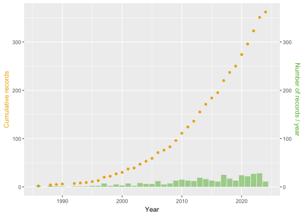
Som det framkommer av Figur 6 er det en stor overvekt over observasjonsstudier (Observational studies) i vårt datamateriale. observasjonsstudier er her definert som studier som baserer seg på empiriske data fra systemet som undersøkes. Også konseptuelle artikler og scenario-modellering er relativt hyppig forkommende.
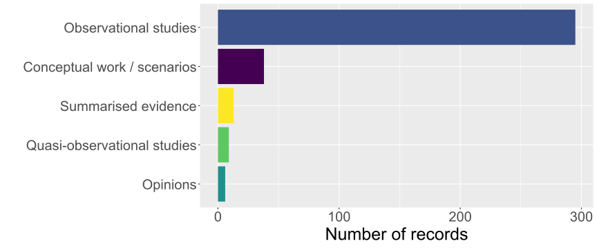
3.3 Naturvitenskapelig litteratur fra Norge
Her ser vi nærmere på de artiklene som brute en naturvitenskapelig metode. De klart mest benyttede forsøksdesignene blandt disse er kontroll-behandling (Control-Impact)-design og etter (After)-design (Figur 7). Merk at vi har inkludert forskning som f.eks. undersøker hvordan gradienter i arealbruk påvirker den aktuelle responsvariabelen under kontroll-behandling. Det er en påfallende mangel på godt designede randomisert eksperimenter (Randomised controlled trials) og studier som følger både kontrollområder og behandligsområder både før og etter (Before-after-control-impact) at et tiltak er satt i verk.

Hvor stor andel av forskningen praktiserer Open Science prinspper?
I vårt datamateriale er det kun en liten andel av artiklene som har gjort data og kildekode tilgjengelig (Figur 8). En enda mindra andel av forskningen er basert på forhåndsregistrerte hypoteser. Siden de kun er de siste årene det har vært vanlig at tidsskrifter krever at data blir gjort åpent tilgjengelig kan man forvente at andelen er noe økende den siste delen av perioden.
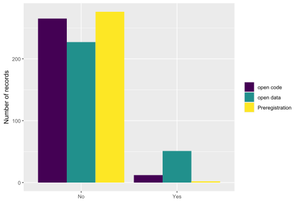
Hvordan er forskningen fordelt på ulike disipliner?
I vårt materiale er det en stor overvekt av forskning som faller inn under fagdisiplinen matematikk og naturvitenskap (Mathematics and Natural Sciences) (Figur 9), men det er også en betydelig andel samfunnsvitenskapelige studier (Social Sciences).
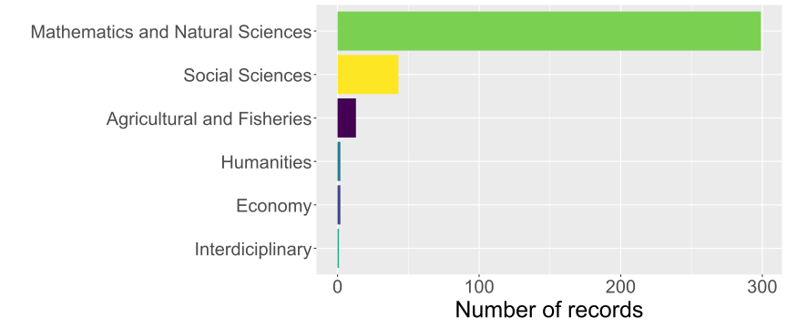
Hvordan er forskningen fordelt med hensyn til størrelse på studieområde (romlig skala)
Det meste av forskningen er gjennomført på det vi har karakterisert som lokal (f.eks. en del av en kommune) eller regional (f.eks. et fjellområder eller et fylke) (Figur 10). En betydelig mindre andel av forskningen dekker hele landet eller er basert på multinasjonale datasett.

Overordnet karakterisering av forskningen fordelt på geografisk fordeling, arealbruk, arealbruksendringer og økosystemer
I dette kapittelet gir vi en oversikt over hvordan forskningen vi har fanget opp i vårt systematiske litteratursøk når det gjelder hvor i landet (fylke) det er gjennomført, hvordan ulike former for arealbruk er representert i datamaterialet, og hvordan de ulike hovedøkosystemene er representert. For alle disse kategoriene kan en og samme artikkel være representert i flere kategorier (f.eks. med flere økosystemer) slik at totalsummen i figurene ikke summerer opp til antall artikler.
Hvor stor andel av forskningen er gjennomført i ulike økosystemer?
De hyppigst studerte økosystemene i vårt materiale er skog (Forest) etterfulgt av fjelløkosystemer (Mountains) og semi-naturlige økosystmer (Semi-natural ecosystems) (Figur 11). Den siste kategorien er dominert av studier på semi-naturlig engvegetasjon. De øvrige økosystemtypene er langt dårligere representert.

Hvordan er forskningen fordelt på ulike fylker?
Det er en betydelig variasjon i hvor mye av forskningen som er fanget opp i vår litteraturgjennomgang som har vært lokalisert i de ulike fylkene (Figur 12). Flest studier er gjennomført i fylkene Innlandet, Trøndelag, Vestland og AKershus, mens det er færrest artikler fra Vetfold, Møre og Romsdal og Troms. I tillegg er det få studier som fokuserer på arealbruk på Svalbard.
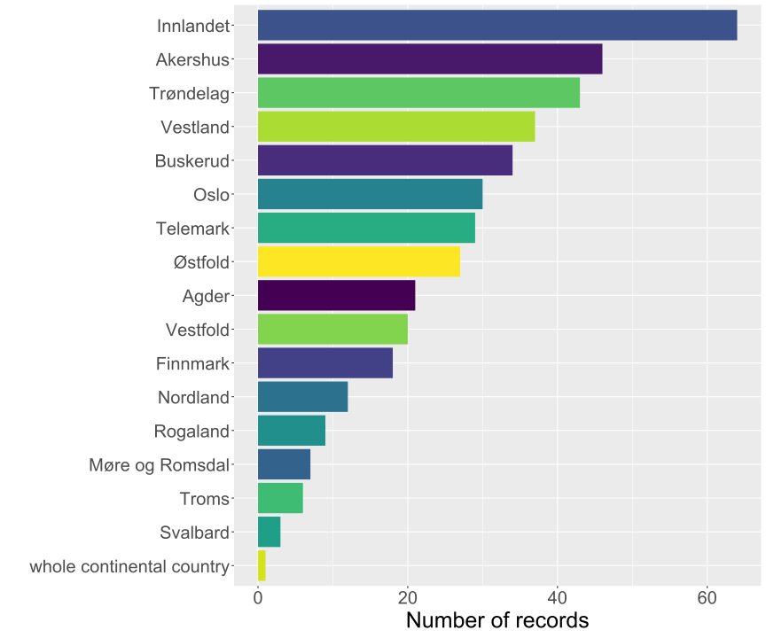
Hvordan er forskningen fordelt med tanke på arealbruk og arealbruksendringer?
Som det framgår av figurene over (Figur 13 og Figur 14)
Det er gjennomført studier av en lang rekke ulike former for arealbruk og arealbruksendringer (Figur 13; Figur 14). På et overordnet plan er det effekter av ulike former for landbruk (Agriculture) og utnyttelse av biologiske ressurser (Biological Resource use) som er hyppigst studert. Det er langt færre artikler som omhandler vern (Protection) og restaurering (Restoriation).
Dersom vi bryter ned areabruk og arelabruksenderinger i finere kategorier (ref. (Nilsen et al. 2024)), ser man at særlig er effekter av skogbruk (Biological resource use: forestry) og effekter av tamme beitedyr (Agricultrue & aquaculture: outfield resources (including grazing)) hyppig studert (Figur 14).

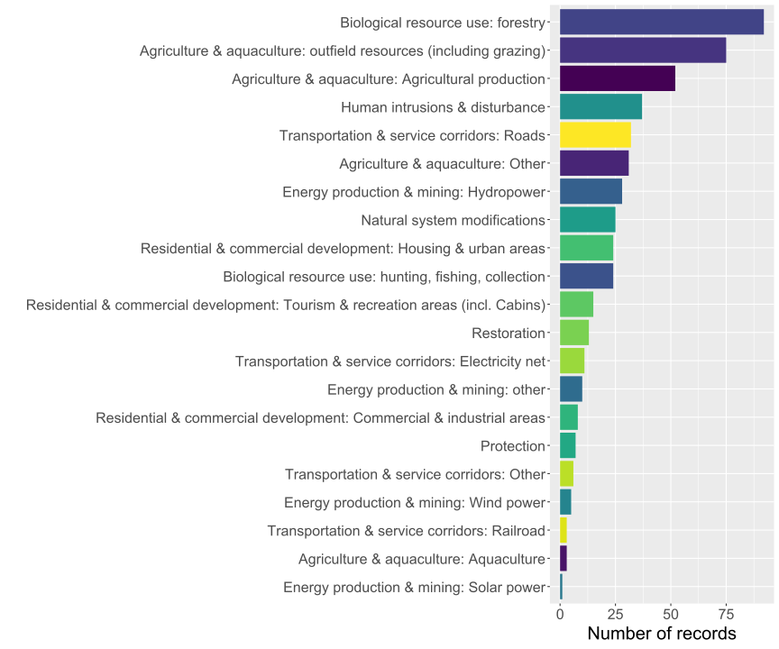
Biologisk organisering
I dette kapittelet vil vi beskrive hvordan forskningen fordeler seg med tanke på hvilket nivå av biologisk organisering (f.eks. arter, slekter eller høyere taksonomiske nivå). Videre vil vi beskrive hvordan ulike essensielle biodiversitetsvariabler (EBV - ref) er representert i forskningsmaterialet, samt hvor ofte ulike former for økosystemtjenester er studert.
Hvordan er forskningen fordelt på ulike taksonomiske nivå?
Det er en klar overvekt av artikler som fokuserer på (en eller flere) arter (Species) i den litteraturen vi har gått gjennom fra Norge (Figur 15). Det er også en relativt stor andel av litteraturen som fokuserer på hele riker (Kingdom). Dette er i stor grad snakk om artikler som beskriver responsen til hele plantesamfunn på en eller flere former for arealbruk.
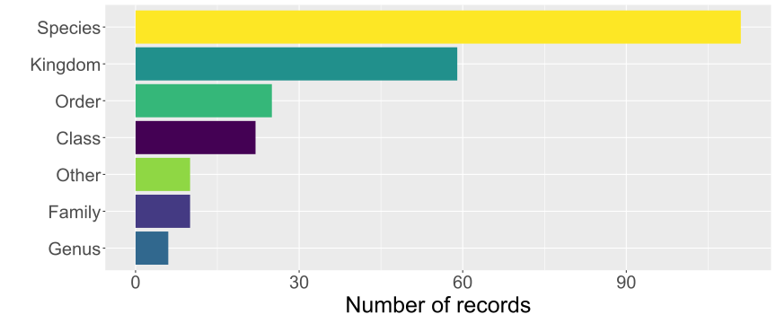
Hvordan er forskningen fordelt på ulike essensielle biodiversitetsvariabler (EBV)

Hvordan er forskningen fordelt på ulike økosystemtjenester?
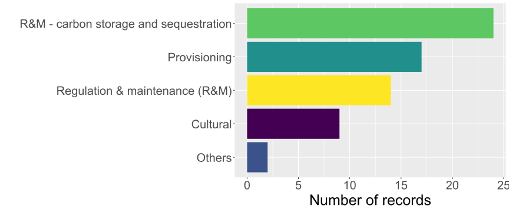
Hvordan er studier som fokuserer på arter fordelt?
Blant studier som fokuserte på en eller et fåtall arter var det studiert av reinsdyr (Rangifer tarandus) som var hyppigst forekommende i vårt datamateriale (Figur 18), mens studier av arealbrukseffekter på gaupe (Lynx lynx), elg (Alces alces) og laks (Salmo salar) kom de neste plassene i frekvenslisten.
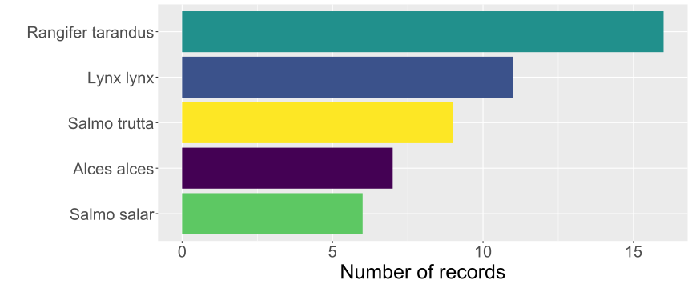
3.4 Samfunnsrelatert litteratur fra Norge
Her følger resultatene fra vår gjennomgang av de studiene som har analysert en eller annen form for konflikt, et forvaltningsverktøy eller styring (governance). Dette tilsvarer 73 artikler av total 264, dvs. 28%. Av disse igjen er det kun 32 artikler som bruker samfunsvitenskeplige metoder.
Hvilke samfunnsfaglige tema har blitt forsket på? (Konflikter, styring og forvaltningsverktøy)

Hvilke metoder er brukt i de samfunnrelaterte studiene?
Av de samfunnsvitenskapelige studiene vi har gjennomgått er det flest som har brukt dokumentstudier som analytisk tilnærming (Figur 20). Dette gjenspeiler også at en del studier kompletterer andre forskningsmetoder ved å undersøke for eksempel politiske dokumenter eller tidligere utvikling på temaet. Mange studier har også brukt intervjuer, samt blandede metoder. Noen få studier tok i bruk metoder for aksjonsforskning og deltagende forskning, mens en studie tok i bruk etnografiske metoder.
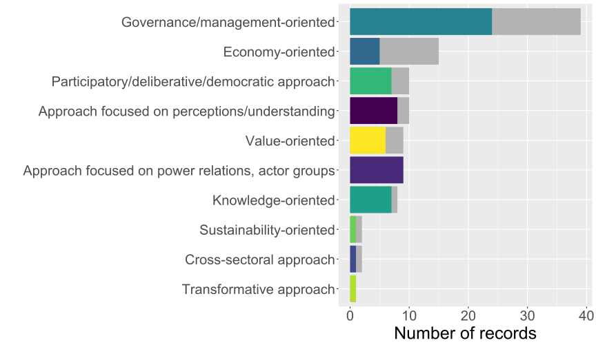
Hvilke analytiske tilnærminger er brukt i de samfunnsvitenskapelige studiene? {.unnumbered}
Hvilke økosystemer har vært tema for samfunnsrelaterte studier?
Av den samfunnsrelaterte og den samfunnsvitenskapelige forskningen vi har undersøkt er flest studier relatert til skogøkosystemer, etterfulgt av fjelløkosystemer og semi-naturlige økosystemer. Disse er igjen etterfulgt av studier relatert til elve- og innsjøøkosystemer, kystøkosystemer, naturlige åpne områder under tregrensen, polare økosystemer og arktisk tundra, våtmarks- og myrøkosystemer, urbane økosystemer samt økosystemer knyttet til jordbruk.
Hvilke typer arealbruk fokuserer de samfunnsvitenskapelige studiene på?

Hvilke styringsnivå fokuserer de samfunnsvitenskapelige studiene på?
De fleste samfunsrelaterte artiklene fokuserte på det lokale styringsnivået, typisk kommunenivå (Figur 23).

Hvilke sektorer fokuserer de samfunnsvitenskapelige studiene på?
Flest studier i den samfunnsrelaterte forskningen vi gjennomgikk var relatert til sektor for kommunal- og distriktspolitikk, etterfulgt av sektor for landbruk- og matpolitikk samt sektor for klima- og miljøpolitikk (Figur 24). Et fåtall studier var relevant for olje- og energipolitikk, nærings- og fiskeripolitikk samt handel.
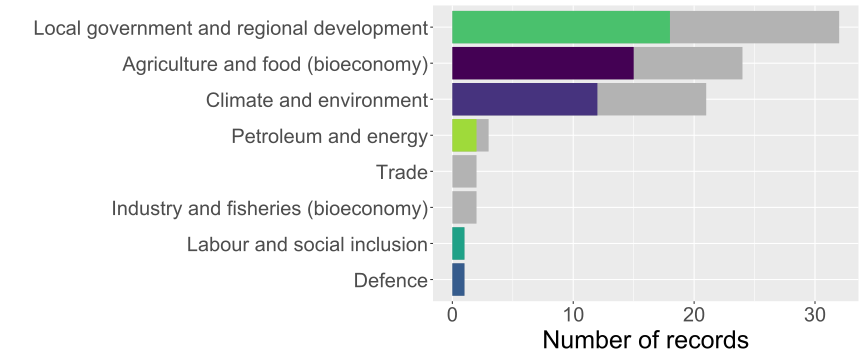
3.5 Systematiske litteratursammenstillinger
I dette kapittelet presenteres resultatene fra gjennomgangen av de systematiske litteraturgjennomgangene som ble fanget opp av vårt søk og som ble vurdet som relevante basert på våre inkluderingskriterier. I motsetning til primærstudier, hvor vi kun inkluderte artikler fra norge, Sverige og Finland var kriteriet for systematiske litteratursammenstillinger at de hadde et global eller , Europeisk eller Fennoskandisk dekning. Narrative oversiktsartikler ble ikke inkludert i vår gjennomgang. Totalt ble 60 artikler inkludert.
3.5.0.1 Hvor hyppig er ulike økosystemer, arealbruk og arealbruksendringer inkludert i de systematiske litteratursammenstillingene?
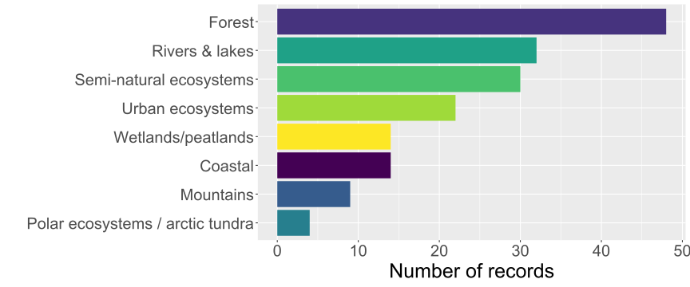

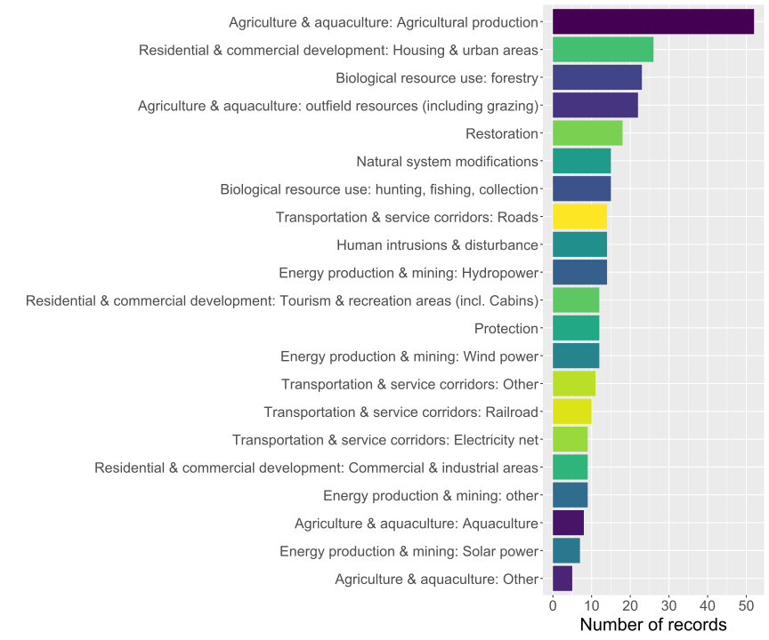
Tekst her om sys revs…
3.5.0.2 Vurdering av studiekvalitet på systematiske litteraturesammenstillinger
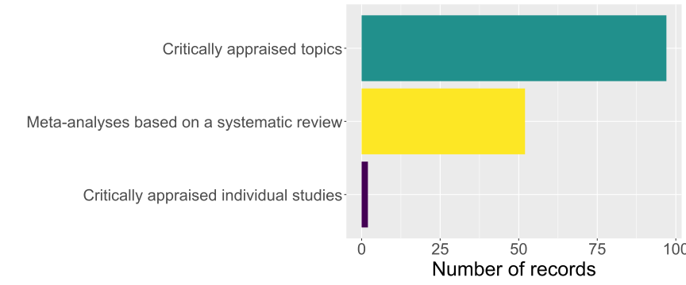


Den hyppist forekommende formen for systematisk litteratursammenstilling i vårt datamateriale er…. (Figur 28).
3.6 Sammenstilning av data fra alle inkluderte artikler fra Norge, Sverige og Finland
I denne seksjonen vil vi presentere rsultater fra alle inkluderte artikler fra Norge, Sverige og Finland. Siden disse artiklene kun har gått gjennom første screening men ikke er kodet er det mer begrenset hva vi kan lese ut av disse artiklene. Vi har her benyttet oss av endel biobliometriske analysemetoder og informasjon fra åpne kilder (for eksempel OpenAlex, som er en database med data og metadata som omhandler den vitenskapelige litteraturen).

Som det framkommer av Figur 29 er den inkluderte litteraturen publisert en en rekke ulike tidsskrifter. Selv om tidsskriftene i seg selv ikke gir et detaljert bilde på hva artiklene omhandler er det to av tidsskriftene på listen (Forest ecology and management og Scandinavian journal of forestry) er rene skogbrukstidsskrifter, mens Agriculture, ecosystems and environment er et interdisiplinært tidsskrift som fokuserer på interaksjonen mellom landbruk og økosystemer. Flere av de øvrige tidsskriftene å listen er generelle økologiske tidsskrifter, og ingen av tidsskriftene er primære samfunnsvitenskapelige tidsskrifter.
En annen måte å kategorisere litteraturen på er å se hvilke “konspter” under OpenAlex de ulike artiklene passer under Figur 30. Selv om konseptene ikke er hierakiske eller passer inn i et enkelt klassifiseringsskjema, ser man at enkelte konspter opptrer mer hyppig enn andre.

Vi gjorde også en enkel analyse av hvilke nøkkelord som vanligvis oppterer samlet, og så hvordan dette fordelte seg mellom ulike nøkkelord Figur 31.

En nettverksanalyse av siteringsnettverkene viser videre at det er klare grupperinger i datasettet (fig?)–co-citation. Disse klustrene, markert med ulike farger domineres av henholdsvis

Vi undersøkte også hvilke tema som ble vanligere og sjeldnere over tid
3.7 En beslutningsmodell basert på inkluderte artikler fra Norge
Vi kan vurdere den konseptuelle utviklingen av et forskningsfelt ved hjelp av bibliometrisk nettverksanalyse (Cobo et al. (2011)). Nærmere bestemt vurderer en slik nettverksanalyse forholdet mellom nøkkelord i et sett med dokumenter. Det hjelper med å identifisere nøkkeltemaer, deres sammenhenger og hvordan de endrer seg over tid, og gir verdifull innsikt for forskere og beslutningstakere når man skal prioritere ny forskning.
Basert på metoden beskrevet i Cobo et al. (2011) hentet vi først nøkkelord (keywords) fra alle de inkluderte artiklene fra Norge. Vi opprettet deretter en såkalt “Co-Currence Matrix” som teller hvor ofte hvert par med nøkkelord forekommer samtidig i dokumentene. Matrisen for samtidig forekomst ble deretter konvertert til en nettverksgraf, der nøkkelord er noder forbundet med kanter som representerer deres samtidige forekomst.
Ved å bruke «walktrap-algoritmen» blir nøkkelord gruppert i klynger. Walktrap-algoritmen er en fellesskapsdeteksjonsmetode som bruker tilfeldige ruter for å utforske nettverket og identifisere klynger av noder som er tettere koblet til hverandre enn til resten av nettverket. Ved å simulere tilfeldige ruter og slå sammen noder basert på deres samtidige forekomstfrekvenser, avslører det effektivt fellesskapsstrukturen i nettverket. Dette gjør det spesielt nyttig for å analysere komplekse nettverk.
Hver klynge representerer et tematisk område innenfor forskningsfeltet (hvor nøkkelord innenfor samme klynge forekommer oftere). Vi benytter to egenskaper til å beskrive de ulike tema. Sentralitet og tetthet. Sentraliteten til hver tema indikerer viktigheten av tema for hele nettverket. Høy sentralitet tilsier at temaer er godt integrert i forskningsfeltet. De fungerer som broer mellom ulike tema og regnes ofte som kjerne- eller «mainstream-temaer». Temaer med lav sentralitet er mer isolerte og har færre forbindelser til andre temaer. Dette kan være nye tema eller nisjeområder som ennå ikke er bredt integrert i det bredere forskningsfeltet. Tetthet måler den interne sammenhengen i et tema. Den indikerer hvor sterkt nøkkelordene innenfor et bestemt tema er knyttet til hverandre. Det gjenspeiler i hvilken grad et tema er selvstendig eller fokusert. Temaer med høy tetthet har sterke interne forbindelser, noe som betyr at nøkkelordene i temaet ofte forekommer sammen med hverandre. Disse temaene er godt utviklet og internt sammenhengende, og representerer ofte spesialiserte forskningsområder. Temaer med lav tetthet har svakere interne forbindelser. Nøkkelordene innenfor disse temaene forekommer ikke like ofte, noe som indikerer at temaet kan være bredere, mindre fokusert eller fortsatt i utvikling.
I figuren under har visualisert nettverket i et strategisk diagram, hvor temaenes sentralitet og tetthet er kategorisert ved deres posisjon i kvadrantene.
Motor-tema (høy sentralitet, høy tetthet): Dette er tema som er viktige og godt utviklet, og som er sentrale for forskningsfeltet. De har høy grad av intern samhold og er bredt koblet til andre tema.
Grunnleggende og transverse tema (høy sentralitet, lav tetthet): Disse tema er sentrale med har mindre grad av internt samhold. De fungerer som broer mellom ulike forskingstema og kan dekke en større bredde i forskningen.
Nisjetema (lav sentralitet, høy tetthet): Disse temaene er spesialisert og har høy grad av intern samhold, men er ofte ikke godt integrert i det større forskningsfeltet. De representerer fokusert forskningstema.
Stigende eller dalende tema (lav sentralitet, lav tetthet): Disse temaene er minder utviklet. De kan være nye tema på veg opp eller eldre tema som har fått mindre fokus.
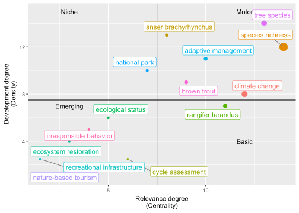
I Figur 33 er temaer indikert med et enkelt felles nøkkelord. Vi kan se at godt studerte temaer i Norge inkluderte artsrikhet (species richness) spesielt i sammenheng med skogforvaltning, rein (Rangifer tarandus) – her med fokus på villrein. Studier rundt habitatvalg (habitat selection) inkluderte studier på gaupe og rådyr. Konflikt mellom mennesker og dyreliv rundt gjess og jordbruk er også godt studert.
Temaer som er stigende omfatter blant annet hyttebygging og bevaring av biologisk mangfold i forbindelse med klimaendringer, samt bærekraftig utvikling. Fremtidige scenarier for arealbruksendring (så vel som andre globale endringer) er også et felt i vekst. Studier rundt urfolk i sammenheng med arealbruksendring er underrepresentert i feltet.
4 Diskusjon
Vår systematiske sammenstilling av litteraturen har gitt en fyldig oversikt over hvilke tema det finnes forskning på og hvilke tema det mangler. Basert på over 20.000 artikler som ble fanget opp av vårt søk endte vi opp med 2301 artikler som oppfylte inkluderingskriteriene etter første runde med screening. Alle artikler fra Norge samt systematiske kunnskapssammenstillinger ble videreført til en andre runde med screening samt datakoding. Totalt omfattende denne litteraturen XX artikler. Som det framgår av resultatseksjonen er det imidlertid stor forskjell på hvor godt de ulike tema, former for arealbruk og arealbruksendringer er dekket. Det er også stor variasjon i hvor mye forskning som har blitt gjennomført i de ulike fylkene (merk - her snakker vi om hvor studiene er gjennomført, ikke hvor forskningsgruppa holder til).
Et gjennomgående trekk fra vår sammestilling av litteraturen fra Norge er at et dominerende andel av den naturvitenskapelige forskningen er basert på empiriske data samlet inn i felt eller fra moderne teknologier (fjernmåling osv). Den støreste andelen av forskningen baserer seg også på lokale eller regionale studier, noe som inneærer at de dekker for eksempel en del av en kommune eller et fylke, eller et større fjellområde. Det er relativt få studier som dekker hele landet. Dette kan være en begrensning siden mange vurderinger (f.eks. rødlisting av arter, ulike rapportering til internasjonale indekser osv) er basert på landsdekkende trender og status. Siden det i Norge er mange overvåkningsprogram som i prinsippet dekker hele landet (for eksempel TOV-e og Rovdata sin rovdyrovervåkning) er dette funnet noe overraskende.
Et annet veldig tydelig funn er at en veldig stor andel av den naturvitenskapelige litteraturen baserer seg på relativt “svake” forsøkdsdesing. Når vi skriver svak mener vi her design som ikke nødvendigvis er godt egent til å avdekke årsak-virkningssamennhenger. Som det framgår av Figur 7 er forskningen vi har kategorisert fra Norge i veldig stor grad domiert av det vi har kategorisert som controll-påvirkning (Control-impact) og etter-desing (After), med en visst innslag av før-etter design (Before-after). Særlig designtypen etter mangler styrke til å si noe om årsak-virkning, siden man ikke har et kontrollområde å sammenlikne effekten av intervensjonen mot. Men også for studiedesign av typen kontroll-påvirkning og før-etter er det velkjent at slutningen kan være utsatte for bias og skjevhet. Nyere statistiske metoder basert på “causal inference” har blitt utviklet for i større grad kunne trekke slutninger om årsak-virkning også fra slike studiedesign. Vi har ikke hatt kapasitet til å undersøke hvor ofte disse har blitt benyttet i den litteraturen vi har kategorisert, men basert på vår genrelle kjennskap til forskningsfeltet er det all grunn til å anta at disse sjeldent benyttes. I motsetning til studiedesignene beskrevet over har studiedesignene randomisert-kontrollert forsøk (Randomised controlled trials - RCT) og tildels før-etter-kontroll-impact (Before-after-controll-impact - BACI) mye større styrke til å avdekke årsak-virkningsforhold og unngås skjevhet i resultatene. Særlig er RCT regnet som gullstandarden innenfor naturvitenskapelig forskning, og det er en påfallende mangel på slike studier i vår gjennomgang (med noen svært gode unntak). En utfordring med RCT og BACI-design knyttet til å forstå effekter av arealbruk på ulike biodiversitetsmål er at de ofte er ressurskrevende og ofte må gjennomføres over en betydelig romlig- og tidsmessig skala for å gi sikker inferens. Dette kan være utfordrende med dagens finansiering av forskning, hvor prosjektene er av en relativt kort varighet og ofte relativt små.
For de inkluderte systematiske litteratursammenstillingene gjorde vi en vurdering basert på modifiserte GRADE-vurderinger (se Metoder). Denne vurderingen avdekket at en relativt liten andel av denne litteraturen var basert på sammenstillinger som en kritisk måte vurderte litteraturen som ble inkludert.
Et annet gjennomgripende funn i vår gjennomgang av primærlitteraturen er at det er en relativt beskjeden andel av litterturen som har gjort data og kildekode åpent tilgjengelig etter at studiene har blitt publisert. Totalt var ikke mer enn 17 % assosisert med åpne data, mens kun 4 % assosiert med åpen kode. Åpen vitenskap har vært et sentralt tema de siste ti årene, og har vokst fram som en “bevegelse” på grunn av en erkjennelse at dette er avgjørende for at samfunnet skal ha tillit til forskningen. Vår gjennomgang viser riktignok en bedring, og i årene etter 2016 har det vært en markant økning i andelen artikler som åpent publiserer forskningsdataene som ligger til grunn. Men også i denne perioden er andelen under 50% når gjelder data, og under 20% når det gjelder kildekode. Denne situasjonen vil ikke nødvendigvis forbedres av seg selv, men krever kontinuerlig jobb både innenfor forskningsmiljøene selv, men også fra de som finansierer forskningen.
Selv om vi innenfor naturvitenskapen søker å finne generelle og almentgyldige svar på forskningsspørsmål ser man ofte at økologien er kontektsavhengig, og at anvendt forskning derfor ofte må skje i geografisk nærhet av der den skal benyttes. Vår gjennomgang av litteraturen fra Norge har avdekket at det er stor variasjon knyttet til hvor hyppig feltstudier gjennomføres i de ulike fylkene i Norge. Særlig er det gjennomført mange studier i Innlandet, Trøndelag og Vestland.
De samfunnsvitenskapelige studiene avdekket at …
4.1 Generell vurdering av litteraturen som omfatter effekter av arealbruk og arealbruksendringer på biologisk mangfold og økosystemtjenester
Vår sammenstilling av den naturvitenskapelige litteraturen fra Norge avdekket hvilke tema som har vært gjenstand for mest forskning i perioden 1986 - 2024. I det materialet vi fanget opp i vår systematiske litteraturgjennomgang var det tre økosystemer som klart skillte seg ut når det gjelder mengde forskning (Figur 11). Særlig viser vår gjennomgang at det er gjennomført mye forskning i skog, og mye av denne forskningen har naturlig nok fokusert på effekter av ulike former for skogbruk på ulike former for biodiversitetsvariabler og økosystemtjenester. Videre har en betydelig mengde forskning blitt gjennomført i semi-naturlig økosystemer, i særlig grad i semi-naturlig gressenger. Her er det flere studier som fokuserer på hvordan endret bruk og hevd påvirker disse systemene. Vårt søk fanget også opp et relatitvt høyt antall artikler som har fokusert på fjelløkosytemer. De andre hovedøkosystemer er langt dårligere dekket, og det er verdt å merke seg at selv om det har vært mye fokus på myrenes betydning både for det biologiske mangfoldet men ikke minst karbonlagring, så fanget vårt søk opp et relativt lavt volum av forskning i dette økosystemet.
Også når det gjelder ulike former for arealbruk og arealbruksendringer ser vi at det er stor variasjon i hvor mye forskning som forekommer. På et overordnet plan (Figur 13) er det størst volum av forskning knyttet til ulike former for landbruk (inkludert både beitebruk og andre former for landbruk) og bruk av biologiske ressurser (inkludert skogbruk og jakt og fiske). For andre hovedformer for arealbruk, inkludert ulike former for energiproduksjon og transport, og ulike former for “residential” er det vesentlig mindre forskning tilgjenglig. Dersom vi bryter opp arealbruken i finere oppdeling er det skogbruk som har klart størst volum av forskning (Figur 14), etterfulgt av effekter av beiting og landbruk mer generelt. Det er påfallende få naturvitenskapelige studier som omhandle effekter av vern og restaurering.
Vi kartla hvilke responsvariabler de ulike studiene fokuserte på, og delte disse inn i henhold til klassifiseringssystemet “Essential Biodiversity Variables” (EBV). Vår gjennomgang av litteraturen viste at det var særlig tre variabler som ble studert, henholdsvis arters utbredelse (Species distribution), arters antall (Species abundance) og taksonomisk diversitet (Taxonomic diversity). De to første variablene blir typisk studert for en eller et fåtall arter i samme studie, mens studier som fokuserer på diversitet typisk fokuserer på diversiteten i hele plantesamfunn eller blant leddyr i et samfunn. Det er også et ganske betydelig (dog langt mindre) volum av forskning på ulike trekk (Traits) som beskriver individer eller arter. Særlig gjelder dette studier av arters bevegelsesmønter (Movement) og habitatseleksjon under ulike former for arealbruk og menneskelige forstyrrelser. Inkludert i denne kategorien finner vi også en rekke studier av hvordan villreinens arealbruk og bevegelsesmønster påvirkes av menneskelig aktivitet og infrastruktur, og hvordan gaupenes bevegelsesmønster henger sammen med ulike former for arealbruk. Ser vi arter som er inkludert hyppigst i vår litteraturgjennomgang finner vi også at disse to artene er hyppigst forekommende. Det er også et betydelig antall studier som undersøker hvordan ulike former for arealbruk påvirker reproduksjon og overlevelse hos populasjoner. I kontrast til variablene over er det relativt få studier som fokuserer på effekter på hele økosystemer (struktur og/eller funksjon) og det er svært få studier som har undersøkt effekter av arealbruk på genetisk variasjon og differensiering.
Økosystemtjenester ble også…
4.2 Sentrale funn knyttet til den samfunnsvitenskapelige litteraturen
4.3 Sentrale funn knyttet til de systematiske litteratursammenstillingene vi har vurdert
4.4 Begrensninger i litteraturstudien
Som alle studier har også vår studie en del begrensninger. den første begrensningen ligger i selve konseptet systematisk kart (James et al. 2016). Formålet her er å kartlegge og sammenstille den tilgjengelige litteraturen, ikke å gå i dybden eller å lese ut resultater fra de enkelte studiene. Vår kartlegging av litteraturen viser slik sett ikke hva vi konkret vet om effekter av arealbruk og arealbruksendringer på biologisk mangfold og økosystemtjenester, kun hva det er forsket på. Å skulle gå inn i detaljer på alle artiklene innenfor et så bredt fagfelt er i praksis ikke mulig, og ville krevd en langt smalere problemstilling. En tilsvarende begrensning med systematiske kart er at man heller ikke gjør en vurderingen av kvaliteten på den inkluderte primærlitteraturen (critical apraisal) . Vår sammestilling av litteraturen gir imidlertid en god oversikt over tema det det har vært forsket på, å gir et godt utgangspunkt for for eksempel systematiske reviews og metaanlyser på utvalgte deler av materialet.
En annen utfordring med å kartlegge litteraturen innenfor et såpass bredt tema er at det kan oppstå uklarheter knyttet til avgrensningen av søk og inkluderingskriterier. Vi jobbet mye med begge disse faktorene i en tidlig fase av prosjektet, og baserte både søkestrategi og inkluderingskriterier på en detaljert protokoll. Denn protokollen ble oppdatert en rekke ganger i en tidlig fase, både basert på input fra en større ekspertgruppe og samfunnsaktører, men også basert på erfaringer reviewgruppa gjorde seg i en tidlig fase. Likevel vil det være noen uklarheter knyttet til hvorvidt enkeltstudier skal inkluderes eller ikke. Vi gjorde gjentatte beregninger av graden av enighet innad i reviewgruppa, og denne lå konsekvent høyere enn . Selv om dette er godt innenfor det som er regnet som akseptabelt betyr det også at det vil være en del studier som reviewgruppa har vurdert ulikt når det med tanke på inkludering vs ekskludering. For artikler som ble screenet i en tidligfase og hvor vi hadde flere som screenet samme artikkel løste vi opp i disse uengihetene. For mesteparten av datamaterialet har imidlertid kun en person vurdert hvorvidt studiet skal inkluderes eller ekskluderes.
Før vi gjennomførte søket gjorde vi mange testsøk, med ulik oppbygging og grad av detaljrikdom. Dette er nærere beskrevet i protokollen (Nilsen et al. 2024). Det søket vi endte opp med er en avveining mellom flere forhold, og det resulterte i treff på et stort antall artikler. Likevel var det to benchmark-artikler som ikke ble fanget opp.. .
Vi hadde opprinnelig planlagt dekke både den vitenskapelige litteraturen og grålitteraturen (norske rapporter osv). Siden omfanget av vitenskapelig litteratur som ble fanget opp av vårt søk var så stort måtte vi imidlertid se bort fra den grå litteraturen i vår gjennomgang. hvor mye av denne litteraturen som ville blitt inkludert er vanskelig å vurdere. Det er sannsynlig at mye av denne litteraturen i større grad beskriver arealbruk og endringer i arealbruk, og i mindre grad evener å vise hvordan dette påvirker det biologiske mangfoldet. Før også denne delen av litteraturen er gått gjennom skal man imidltertid være varsom med å trekke slike slutninger.
Til sist er det en mulig begrensning at vi måtte utelate xxx artikler uten at vi hadde kapasitet til å kjøre en full screening. Merk at vi gikk gjennom all litteratur som hadde en høy stjerne i Rayans rangeringsssytem (basert å kunstig intelligens), slik at artikler som gjensto hadde lavere sannsynlighet for å være aktuelle. Vi screenet også alle artikler hvor “Norge” eller “Norway” dukket opp tittle, nøkkelord, abstract eller adressen til forfatterne. For å få et estimat på hvor mye av denne litteraturen som ville passert første runde med screening tok vi et tilfeldig utvalg på 100 av de gjenværende artiklene og screenet disse. Av disse vurderte vi at X% var innenfor våre inkluderingskriterier, men ingen var fra Norge. Vi antar derfor at det vil være meget få aktuelle artikler fra Norge som ikke ble screenet, men at det vil være en del aktuelle artikler fra Sverige og Finland.
4.5 Datamangler og kunnskapshull
Det er generelt en mangel på godt designede eksperimenter, eller i det minste kvasi-eksperimenter (er nesten helt fraværende).
Biodiversitet-effekter av arealbruk i strandsonen var lite dekket.
Det er gjennomført relativt få studier fra våtmark .Dette står i kontrast til hvor stor utbredelse dette økosystemet har i Norge og Fennoscandia.
Biodiversitet-effekter av de ulike typer installasjoner for kraftproduksjon er relativt dårlig dekket. Spesielt er effekter av vindkraft lite dekket, sett i forhold til samfunnsfokuset og omfanget av vindkraft i naturen.
Det var relativt få studier med bredt fokus på økosystemeffekter (og i stedet mange studier på enkeltarter).
Det er gjennomført svært få studier som baserer seg på forhåndsregistrerte hypoteser
Geografisk fordeling
Fordeling på økosystemer
EBV
Typer arealbruk / endringer
Disipliner
Skala
Open Science
Økosystemtjenester
Karbonlagring
5 Konklusjoner
6 Referanser
References
Artsdatabanken. 2021. Norsk rødliste for arter. Artsdatabanken, Trondheim.
Aspøy, H., and Stokland, H. 2022. Segmented forest realities: The ontological politics of biodiversity mapping. Environmental Science & Policy 137: 120–127. doi:10.1016/j.envsci.2022.08.015.
Aune, S., Bryn, A., and Hovstad, K.A. 2018. Loss of semi-natural grassland in a boreal landscape: Impacts of agricultural intensification and abandonment. Journal of Land Use Science 13(4): 375390. doi:10.1080/1747423X.2018.1539779.
Bouyer, Y., San Martin, G., Poncin, P., Beudels-Jamar, R.C., Odden, J., and Linnell, J.D.C. 2015. Eurasian lynx habitat selection in human-modified landscape in norway: Effects of different human habitat modifications and behavioral states. Biological Conservation 191: 291–299. doi:10.1016/j.biocon.2015.07.007.
Cobo, M.J., López-Herrera, A.G., Herrera-Viedma, E., and Herrera, F. 2011. An approach for detecting, quantifying, and visualizing the evolution of a research field: A practical application to the fuzzy sets theory field. Journal of informetrics 5(1): 146–166. Elsevier.
Díaz, S., Settele, J., Brondízio, E.S., Ngo, H.T., Agard, J., Arneth, A., Balvanera, P., Brauman, K.A., Butchart, S.H.M., Chan, K.M.A., Garibaldi, L.A., Ichii, K., Liu, J., Subramanian, S.M., Midgley, G.F., Miloslavich, P., Molnár, Z., Obura, D., Pfaff, A., Polasky, S., Purvis, A., Razzaque, J., Reyers, B., Chowdhury, R.R., Shin, Y.-J., Visseren-Hamakers, I., Willis, K.J., and Zayas, C.N. 2019. Pervasive human-driven decline of life on earth points to the need for transformative change. Science 366(6471): eaax3100. doi:10.1126/science.aax3100.
Dorber, M., May, R., and Verones, F. 2018. Modeling net land occupation of hydropower reservoirs in norway for use in life cycle assessment. Environmental Science & Technology 52(4): 2375–2384. doi:10.1021/acs.est.7b05125.
Edvardsen, H., A. 2024. Natur i norge. Variasjon satt i system. Universitetsforlaget.
Foldvik, A., Einum, S., Finstad, A.G., and Ugedal, O. 2017. Linking watershed and microhabitat characteristics: effects on production of Atlantic salmonids (Salmo salar and Salmo trutta). Ecology of Freshwater Fish 26(2): 260–270. doi:10.1111/eff.12272.
Guldbrandsen, L.H., and Handberg, Ø.N. 2022. Hvem har makt i norsk klimapolitikk?
Gundersen, V., Vistad, O.I., Panzacchi, M., Strand, O., and Moorter, B. van. 2019. Large-scale segregation of tourists and wild reindeer in three norwegian national parks: Management implications. Tourism Management 75: 22–33. doi:10.1016/j.tourman.2019.04.017.
Haddaway, N.R., Feierman, A., Grainger, M.J., Gray, C.T., Tanriver-Ayder, E., Dhaubanjar, S., and Westgate, M.J. 2019. EviAtlas: A tool for visualising evidence synthesis databases. Environmental Evidence 8(1): 22. doi:10.1186/s13750-019-0167-1.
Haddaway, N.R., Grainger, M.J., and Gray, C.T. 2022. Citationchaser: An r package and shiny app for forward and backward citations chasing in academic searching. Zenodo. doi:10.5281/zenodo.4543513.
Hamre, L.N., Domaas, S.T., Austad, I., and Rydgren, K. 2007. Land-cover and structural changes in a western Norwegian cultural landscape since 1865, based on an old cadastral map and a field survey. Landscape Ecology 22(10): 1563–1574. doi:10.1007/s10980-007-9154-y.
Hamre, L.N., Rydgren, K., Incerti, C., Hjorth-Johansen, I., and Simonsen, K.S. 2021. Paradise lost transformation of the gully landscape in south-east norway. Landscape Research 46(3): 377389. doi:10.1080/01426397.2020.1847263.
Hedges, L.V., and Olkin, I. 1980. Vote-counting methods in research synthesis. Psychological Bulletin 88(2): 359–369. doi:10.1037/0033-2909.88.2.359.
IPBES. 2019, May. Global Assessment Report on Biodiversity and Ecosystem Services IPBES secretariat. https://www.ipbes.net/node/35274.
James, K.L., Randall, N.P., and Haddaway, N.R. 2016. A methodology for systematic mapping in environmental sciences. Environmental Evidence 5(1): 7. doi:10.1186/s13750-016-0059-6.
Jarnemo, A., Minderman, J., Bunnefeld, N., Zidar, J., and Månsson, J. 2014. Managing landscapes for multiple objectives: alternative forage can reduce the conflict between deer and forestry. Ecosphere 5(8): art97. doi:10.1890/ES14-00106.1.
Jaureguiberry, P., Titeux, N., Wiemers, M., Bowler, D.E., Coscieme, L., Golden, A.S., Guerra, C.A., Jacob, U., Takahashi, Y., Settele, J., Díaz, S., Molnár, Z., and Purvis, A. 2022. The direct drivers of recent global anthropogenic biodiversity loss. Science Advances 8(45): eabm9982. doi:10.1126/sciadv.abm9982.
Karlsson, J., Byström, P., Ask, J., Ask, P., Persson, L., and Jansson, M. 2009. Light limitation of nutrient-poor lake ecosystems. Nature 460(7254): 506–509. doi:10.1038/nature08179.
Korsnes, M., Loewen, B., Dale, R.F., Steen, M., and Skjølsvold, T.M. 2023. Paradoxes of norway’s energy transition: Controversies and justice. Climate Policy 23(9): 11321150. doi:10.1080/14693062.2023.2169238.
Malhi, Y., Franklin, J., Seddon, N., Solan, M., Turner, M.G., Field, C.B., and Knowlton, N. 2020. Climate change and ecosystems: Threats, opportunities and solutions. Philosophical Transactions of the Royal Society B: Biological Sciences 375(1794): 20190104. doi:10.1098/rstb.2019.0104.
Nilsen, E.B., Grainger, M.J., Singsaas, F.T., Simensen, T., Stokland, H., and Sutcliffe, T. 2024. Study protocol. doi:10.17605/OSF.IO/MWAPC.
Nybø, S., Arneberg, P., Framstad, E., Ims, R., Lyngstad, A., Schartau, A.K., Sickel, H., Sverdrup-Thygeson, A., and Vandvik, V. 2017. Fagsystem for fastsetting av god økologisk tilstand - forslag fra et ekspertråd.
Pedersen, C., and Krøgli, S.O. 2017. The effect of land type diversity and spatial heterogeneity on farmland birds in norway. Ecological Indicators 75: 155–163. doi:10.1016/j.ecolind.2016.12.030.
Rolstad, J., Blanck, Y., and Storaunet, K.O. 2017. Fire history in a western Fennoscandian boreal forest as influenced by human land use and climate. Ecological Monographs 87(2): 219–245. doi:10.1002/ecm.1244.
Rusch, G.M., Bartlett, J., Kyrkjeeide, M.O., Lein, U., Nordén, J., Sandvik, H., and Stokland, H. 2022. A joint climate and nature cure: A transformative change perspective. Ambio 51(6): 1459–1473. doi:10.1007/s13280-021-01679-8.
Skogen, K., Krange, O., and Figari, H. 2021. Wolf Conflicts - A Sociological Study. https://www.berghahnbooks.com/title/SkogenWolf.
Skogen, K., Mauz, I., and Krange, O. 2008. Cry Wolf!: Narratives of Wolf Recovery in France and Norway*. Rural Sociology 73(1): 105–133. doi:10.1526/003601108783575916.
Tombre, I.M., Eythórsson, E., and Madsen, J. 2013. Towards a Solution to the Goose-Agriculture Conflict in North Norway, 19882012: The Interplay between Policy, Stakeholder Influence and Goose Population Dynamics. PLOS ONE 8(8): e71912. doi:10.1371/journal.pone.0071912.